El problema
Existen pilotos, asistentes y automatizaciones, pero no una ambición compartida, un portafolio priorizado ni un operating model que sostenga el cambio. Cada función avanza a su ritmo y el valor no llega a la cuenta de resultados.
Etapas B · E · C · O
Alineación ejecutiva sobre outcomes y strategic choices.
Diagnóstico de workflows, datos, decisiones y readiness.
Value pools priorizados por valor, feasibility, velocidad y riesgo.

OTarget operating model, blueprint, business case y roadmap.
Qué value pools se atacan primero y con qué secuencia.
Qué roles, decisiones, datos y controles se rediseñan.
Qué capability entra al primer Build & Embed Sprint.
Timeline
8–12 semanas, con checkpoints ejecutivos cada dos semanas.
Working model
Equipo mixto BECOME y cliente. Build with, not for.
Al terminar Discovery, el liderazgo sabe dónde la IA puede crear valor, qué debe cambiar dentro de la empresa y qué capability debe construir primero.
Cuéntanos qué necesita cambiar en el negocio. Determinaremos si Discovery es el primer paso adecuado.
Inicia tu Discovery